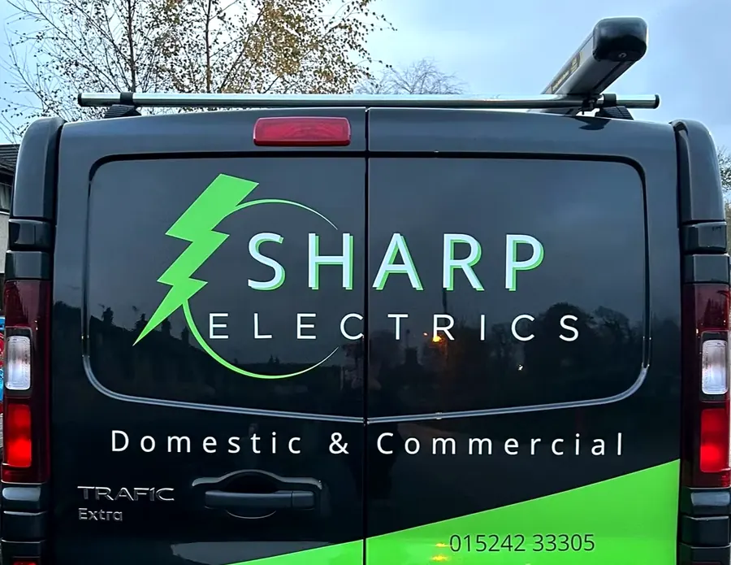
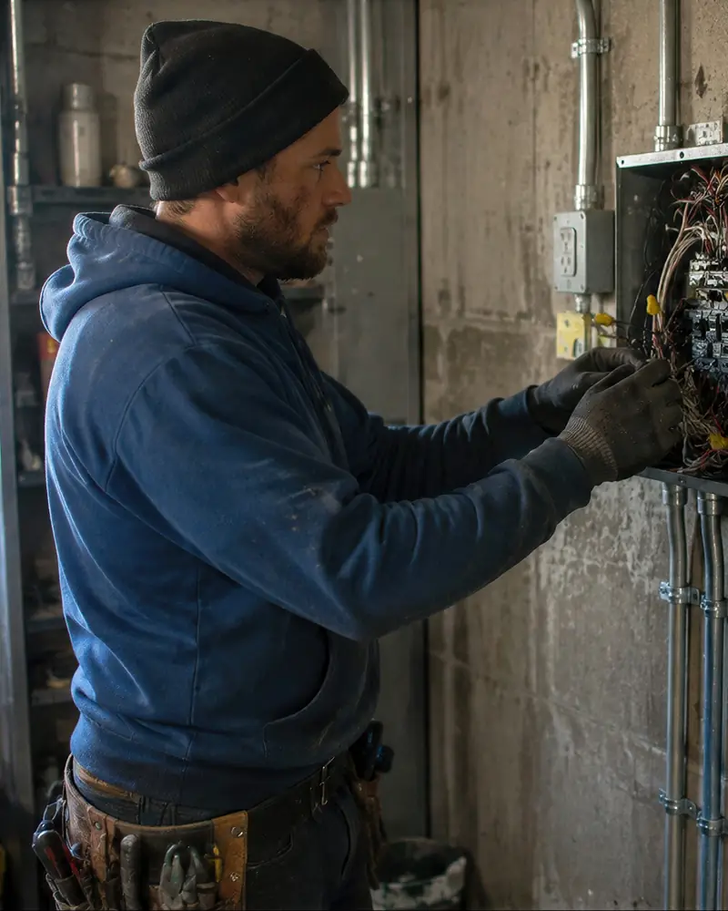
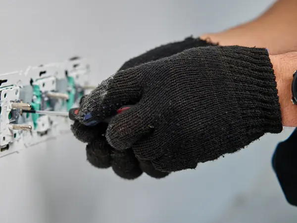
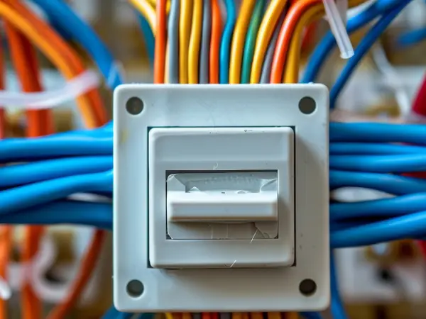
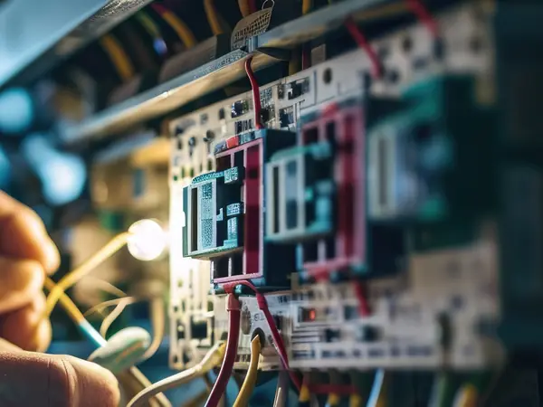

Your local electrician in Bentham, Ingleton and Settle
Domestic and commercial electrical work across the Dales and the Lune Valley, from a new socket to a full rewire. NAPIT and TrustMark registered, with 18 years in the trade.
Sharp Electrics: electricians for homes and businesses in the Dales
Sharp Electrics is a domestic and commercial electrician based in Bentham, North Yorkshire, run by Dan Sharp. Dan has worked as an electrician for over 18 years and covers Bentham, Ingleton, Settle, Kirkby Lonsdale, Carnforth, Caton, Hornby, Milnthorpe, Long Preston and Hellifield. He is registered with NAPIT and TrustMark, fully insured and works to the current wiring regulations, BS 7671.
Whether you need a landlord's safety report, a new consumer unit, a rewire or a fault tracked down, you deal with Dan from the first call to the final certificate.
- Registered and insuredNAPIT and TrustMark registered, and fully insured.
- Straight quotesA clear, free quote before any work starts, with no surprises.
- One person, start to finishYou deal with Dan from the first call to the final certificate.
- 12-month guaranteeMy work and the equipment I fit are guaranteed for 12 months.

What I can help with
No job too small. Each service has its own page explaining what's involved, with answers to the questions people ask most.
EICRs and inspections
Electrical safety reports for landlords, house sales and peace of mind.
About EICRsConsumer unit upgrades
Replace an old fuse box with a modern board with RCD and surge protection.
About consumer unitsRewires
Full and partial rewires for houses, cottages and older stone properties.
About rewiresFault finding and emergencies
Tripping circuits, power loss and burning smells found and fixed.
About fault findingDomestic electrical work
Sockets, lighting, rewires, EV chargers, CCTV and everyday jobs around the house.
About domestic workCommercial work
Shops, offices, cafés, holiday lets and industrial sites, including fire alarms, emergency lighting, PAT testing and maintenance contracts.
About commercial work
How it works
Getting an electrician shouldn't be a chore. Here's what to expect.
Get in touch
Call, message me on WhatsApp or send the contact form. Tell me what you need and where you are.
Free quote
I'll talk it through with you and give you a clear quote, visiting the property first where the job needs it.
Done, tested and certified
I do the work, test everything and give you the certificates you need.
What customers say
Every Google review so far has been five stars.
To do: paste one of Dan's Google reviews here, in the customer's own words.
Name, and when they reviewed
To do: paste one of Dan's Google reviews here, in the customer's own words.
Name, and when they reviewed
To do: paste one of Dan's Google reviews here, in the customer's own words.
Name, and when they reviewed



Where I work
Based in Bentham and covering the Yorkshire Dales, the Lune Valley and north Lancashire.
- Bentham
- Ingleton
- Settle
- Kirkby Lonsdale
- Carnforth
- Caton
- Hornby
- Milnthorpe
- Long Preston
- Hellifield
Common questions
How often do I need an EICR?
Landlords in England need an EICR at least every five years. For a home you live in, every ten years is the usual recommendation, or when you buy or sell. Read more about EICRs.
Do I need to move out for a rewire?
Usually not. Many rewires are done while people are still living in the house, working room by room. It takes some planning, and I'll talk you through what to expect before we start. Read more about rewires.
Which areas do you cover?
I cover Bentham, Ingleton, Settle, Kirkby Lonsdale, Carnforth, Caton, Hornby, Milnthorpe, Long Preston and Hellifield, and the villages in between.
Are you registered and insured?
Yes. I am registered with NAPIT and TrustMark and fully insured, and my work is tested and certified to the current wiring regulations, BS 7671.
How do I get a quote?
Call 015242 33305, message me on WhatsApp or use the contact form. Quotes are free and without obligation. For some jobs, such as a rewire, I'll need to see the property first.
Do you do emergency call-outs?
Yes. If you have lost power or have a fault that can't wait, call me on 015242 33305 and I'll tell you straight away when I can get to you. See what to do in an electrical emergency.
Need an electrician in the Dales?
Call Dan on 015242 33305 or send a message for a free quote.